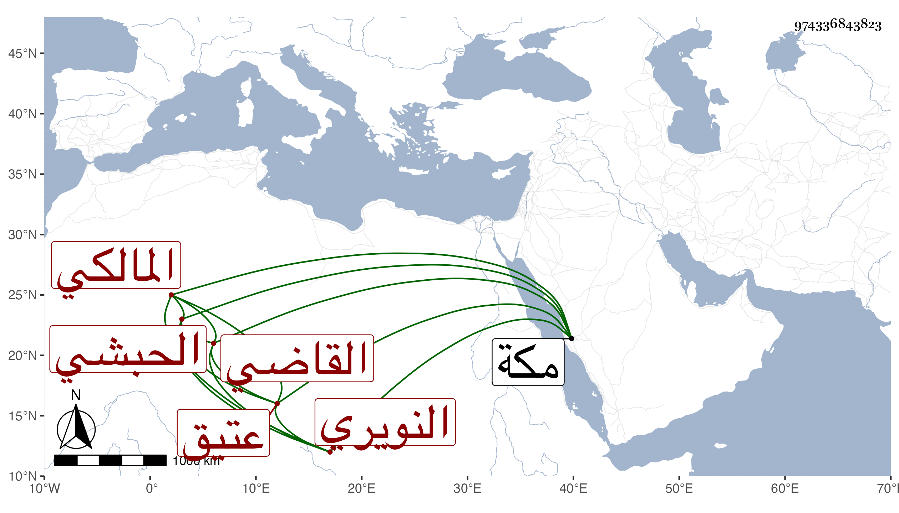

0902Sakhawi.DawLamic.ITO20230111-ara1.EIS1600.974336843823
Biography ID: 974336843823
875
ريحان الحبشي عتيق القاضي علي بن أحمد النويري المالكي . سمع من الكمال بن حبيب شيئا من آخر مسند الطيالسي ، ومن أحمد بن سالم المؤذن والقروي قطعة من أول موطأ يحيى بن يحيى وآخره ومن الجمال الاميوطي قطعة من سيرة ابن سيد الناس أخذ عنه التقي بن فهد وأورده في معجمه . مات في المحرم سنة سبع وأربعين بمكة .
